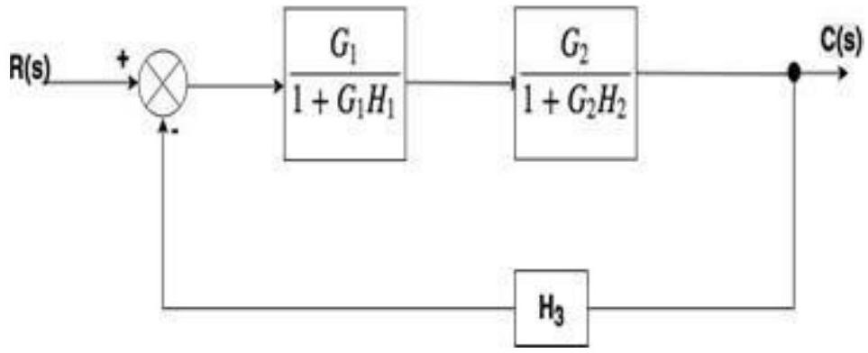

Unit-4: Block Diagram & Signal Flow Graphs (SFG)
Basic Elements of Block Diagram
The basic elements of a block diagram are a block, the summing point and the take-off point. Let us consider the block diagram of a closed loop control system as shown in the following figure to identify these elements.
The above block diagram consists of two blocks having transfer functions $G(s)$ and $H(s)$. It is also having one summing point and one take-off point. Arrows indicate the direction of the flow of signals. Let us now discuss these elements one by one.
Block
The transfer function of a component is represented by a block. Block has single input and single output.
The following figure shows a block having input $X(s)$, output $Y(s)$ and the transfer function G(s).
Transfer Function, $G(s)=Y(s)/X(s)$
$\Rightarrow Y(s)=G(s)X(s)$
Output of the block is obtained by multiplying transfer function of the block with input.
Summing Point
The summing point is represented with a circle having cross (X) inside it. It has two or more inputs and single output. It produces the algebraic sum of the inputs. It also performs the summation or subtraction or combination of summation and subtraction of the inputs based on the polarity of the inputs. Let us see these three operations one by one.
The following figure shows the summing point with two inputs (A, B) and one output (Y). Here, the inputs A and B have a positive sign. So, the summing point produces the output, Y as sum of A and B.
i.e.,Y = A + B.

The following figure shows the summing point with two inputs (A, B) and one output (Y). Here, the inputs A and B are having opposite signs, i.e., A is having positive sign and B is having negative sign. So, the summing point produces the output Y as the difference of A and B.
Y = A + (-B) = A - B.
The following figure shows the summing point with three inputs (A, B, C) and one output (Y). Here, the inputs A and B are having positive signs and C is having a negative sign. So, the summing point produces the output Y as
Y = A + B + (−C) = A + B − C.
Take-off Point
The take-off point is a point from which the same input signal can be passed through more than one branch. That means with the help of take-off point, we can apply the same input to one or more blocks, summing points.
In the following figure, the take-off point is used to connect the same input, $R(s)$ to two more blocks.
In the following figure, the take-off point is used to connect the output $C(s)$, as one of the inputs to the summing point.
Canonical Form of Closed Loop Control System:
Let,
- $X_i(s) \rightarrow$ Input signal
- $X_0(s) \rightarrow$ Output signal
- $G(s) \rightarrow$ Transfer function of the open-loop control system
- $H(s) \rightarrow$ Gain of the elements in the feedback path
- $B(s) \rightarrow$ The output of feedback elements
- $E(s) \rightarrow$ Error signal
Then the closed-loop control system can be represented as shown below.
From the above diagram
$G(s) =X_0(s)/E(s)$
$\Rightarrow E(s) =X_0(s)/G(s)$
$E(s)$ can also be written as
$E(s) =X_i(s)−B(s)$
$\Rightarrow X_0(s)/G(s) =X_i(s)−B(s)$
From the diagram,
$H(s) =B(s)/X_0(s)$
$\Rightarrow X_0(s)/G(s) =X_i(s) −H(s) X_0(s)$
$\Rightarrow X_0(s) =G(s) X_i(s) −G(s) H(s) X_0(s)$
$\Rightarrow X_0(s) [1+G(s) H(s)] =G(s) X_i(s)$
This is the standard form of representing the closed loop control system with negative feedback.
Block diagram reduction rules:
Rule No.1. Blocks in Cascade
When two or more blocks are connected in series, then the resultant block is the product of the individual blocks.
Rule No.2 Blocks in parallel
When two or more blocks are connected in parallel, then the resultant block is the sum of the individual blocks.
Rule No.3 Moving a take-off point ahead of a block
When the take-off point is moved ahead of a block (before the block), then the same transfer function is introduced in the take-off point branch.
Rule No.4 Moving the take-off point after the block
When the take-off point is moved after the block, then a block with reciprocal of a transfer function is introduced in the take-off point branch.
Rule No.5 Moving a summing point beyond the block
Rule No.6:Moving a summing point ahead of a block
Rule No.7: Interchanging two summing points
Rule No.8:Moving a take-off point beyond a summing point
Rule No.9: Moving a take-off point ahead of a summing point
Rule No.10: Eliminating a forward loop
Example
Find the transfer function of the following by block reduction technique.
Solution
Step 1: There are two internal closed loops. Firstly, we will remove this loop.
Step 2: When the two blocks are in a cascade or series we will use rule no.1.
Step 3: Now we will solve this loop.
Step 4:
Ans.